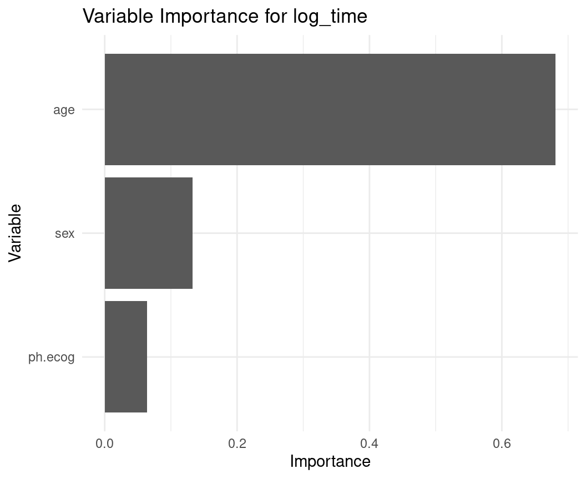
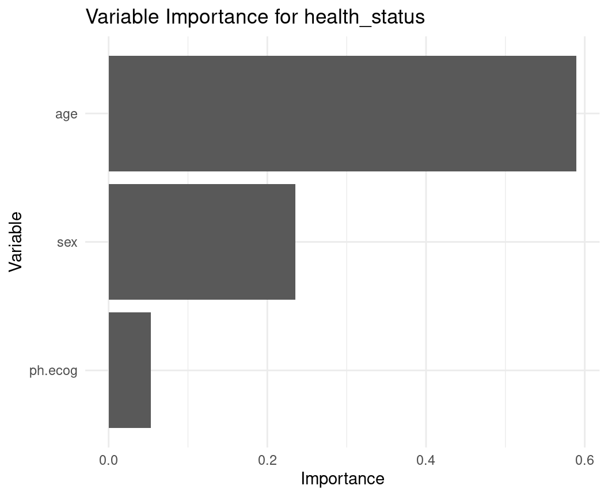
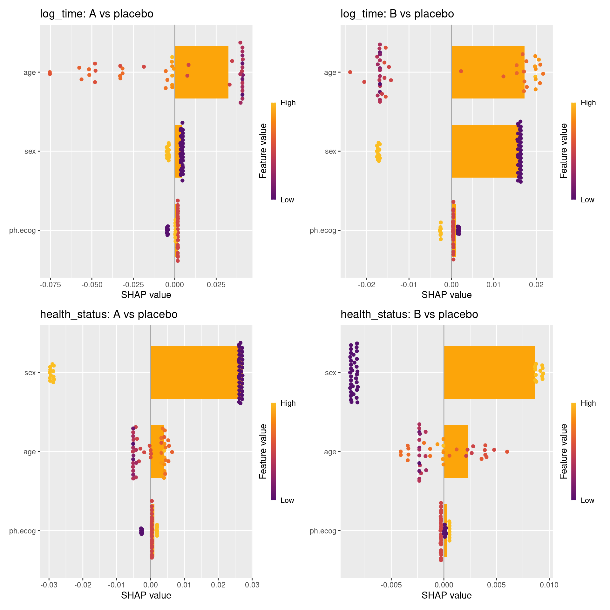
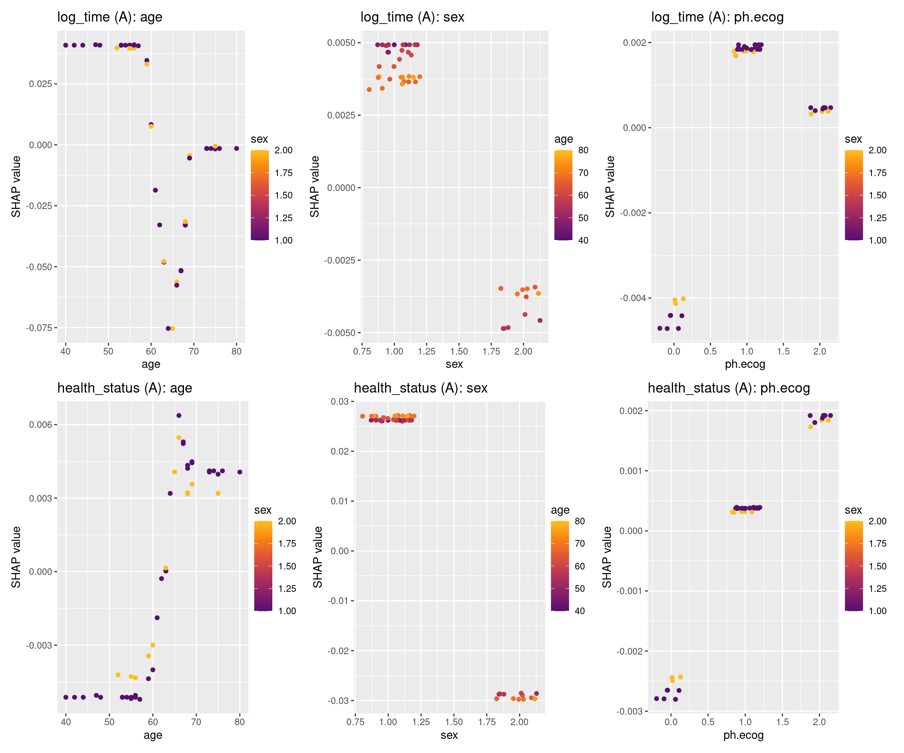

Code
packages <- c(
"tidyverse",
"plyr",
"RCausalML",
"causaldata",
"mlbench",
"survival",
"BART",
"grf",
"kernelshap",
"shapviz"
)
This section introduces the multi-arm/multi-outcome causal forest, an extension of the standard Causal Forest that can handle multiple treatment arms and multiple outcomes simultaneously. This method is particularly useful in complex experimental settings where researchers want to understand how different treatments affect various outcomes across heterogeneous populations.
A Multi-Arm/Multi-Outcome Causal Forest extends the standard Causal Forest to handle two common real-world complications simultaneously: there may be more than two treatment options (multiple arms), and the researcher may care about more than one outcome at the same time (multiple outcomes). It remains fully within the Generalized Random Forest (GRF) framework, preserving the core properties of honest estimation and non-parametric flexibility.
The key promise of this extension is information sharing: by modeling treatment arms and outcomes jointly, the forest can borrow strength across related estimates rather than fitting each comparison in isolation — improving precision, especially when sample sizes per arm are limited.
A multi-arm/multi-outcome causal forest is the right tool when the research question is of the form: “How does each treatment affect each outcome, and does this vary across subgroups?”
Concrete settings include:
In all these cases, fitting separate single-arm, single-outcome models would ignore correlations between outcomes and inflate estimation variance — particularly when some arms have few observations.
Multi-arm treatment effects. With \(J\) treatment arms (including control \(W = 0\)), the forest estimates \(J\) separate conditional effects for each individual:
\[\tau_j(X) = E[Y \mid W = j,\, X = x] - E[Y \mid W = 0,\, X = x], \quad j = 1, \ldots, J\]
Multi-outcome treatment effects. With \(K\) outcomes \(Y_1, \ldots, Y_K\), the forest estimates an effect for each combination of arm \(j\) and outcome \(k\):
\[\tau_{j,k}(X) = E[Y_k \mid W = j,\, X = x] - E[Y_k \mid W = 0,\, X = x]\]
The full output for an individual is therefore a \(J \times K\) matrix of treatment effect estimates.
Joint splitting criterion. Unlike fitting \(J \times K\) independent forests, a single tree’s splits are chosen to maximize heterogeneity across all arms and outcomes simultaneously, using a joint loss function that respects the covariance structure among outcomes. This is what enables information sharing.
Nuisance estimation. Propensity scores \(\hat{e}_j(X) = P(W = j \mid X)\) and outcome regressions \(\hat{\mu}_k(X)\) are estimated using separate regression forests. Residualizing with these nuisances — forming \(\tilde{Y}_k = Y_k - \hat{\mu}_k(X)\) and \(\tilde{W}_j = \mathbf{1}(W=j) - \hat{e}_j(X)\) — removes confounding before the causal forest estimates effects.
Honest estimation. As in all GRF methods, each tree uses a separate subsample to find splits (\(S_1\)) and to estimate effects within leaves (\(S_2\)), preventing overfitting and ensuring asymptotically valid confidence intervals.

A few things worth emphasizing from the pipeline:
The \(J \times K\) matrix in step 5 is the defining output. Each row is a treatment arm; each column is an outcome. For an individual with covariates \(X = x\), every cell gives a separate CATE estimate with its own confidence interval. This is what distinguishes the multi-arm/multi-outcome forest from running \(J \times K\) separate causal forests — the joint splitting criterion in step 3 means the covariate partitions reflect shared structure across all cells, not independent ones.
Step 2 (nuisance estimation) is more complex here than in the binary treatment case. With \(J\) arms, the forest must estimate \(J\) propensity scores \(\hat{e}_j(X)\) — one per arm — and \(K\) outcome regressions \(\hat{\mu}_k(X)\). These are estimated via separate regression forests and used to form the residuals \(\tilde{W}_j\) and \(\tilde{Y}_k\) that the causal forest then splits on.
Information sharing is the key efficiency gain. When outcomes \(Y_1\) and \(Y_2\) are correlated (e.g., systolic and diastolic blood pressure), the joint covariance structure in the splitting criterion means that a split informative for one outcome also informs the other. This can substantially reduce variance compared to independent forests, particularly in small-sample regimes.
Standard Causal Forest: Handles one treatment (binary or continuous) and one outcome, estimating a single treatment effect per individual.Multi-Arm/Multi-Outcome Causal Forest:
This tutorial demonstrates how to implement a multi-arm/multi-outcome causal forest in R using the grf package. The example uses the lung dataset from the survival package, simulating a multi-arm treatment scenario with multiple outcomes.
Following R packages are required to run this notebook. If any of these packages are not installed, you can install them using the code below:
tidyverse, plyr, RCausalML, causaldata, mlbench, survival, BART, grf, kernelshap, shapviz
packages <- c(
"tidyverse",
"plyr",
"RCausalML",
"causaldata",
"mlbench",
"survival",
"BART",
"grf",
"kernelshap",
"shapviz"
)# Install missing packages
# new_packages <- packages[!(packages %in% installed.packages()[, "Package"])]
# if (length(new_packages)) install.packages(new_packages)# Load packages with suppressed messages
invisible(lapply(packages, function(pkg) {
suppressPackageStartupMessages(library(pkg, character.only = TRUE))
}))# Check loaded packages
cat("Successfully loaded packages:\n")Successfully loaded packages: [1] "package:shapviz" "package:kernelshap" "package:grf"
[4] "package:BART" "package:nlme" "package:survival"
[7] "package:mlbench" "package:causaldata" "package:RCausalML"
[10] "package:plyr" "package:lubridate" "package:forcats"
[13] "package:stringr" "package:dplyr" "package:purrr"
[16] "package:readr" "package:tidyr" "package:tibble"
[19] "package:ggplot2" "package:tidyverse" "package:stats"
[22] "package:graphics" "package:grDevices" "package:utils"
[25] "package:datasets" "package:methods" "package:base" The lung dataset includes survival data for lung cancer patients. Since lung lacks a treatment variable and multiple outcomes, we:
Simulates a multi-arm treatment variable with three levels: placebo, A, and B and Assigns probabilities (40% placebo, 30% A, 30% B) for each treatment.
Simulates a binary secondary outcome (e.g., health_status, 1 = yes, 0 = no) with treatment-dependent probabilities.
Use log-transformed survival time (log_time) as the primary outcome to ensure numerical stability
# Load and modify the lung data
data(lung, package = "survival")
lung_data <- lung %>%
dplyr::filter(!is.na(age), !is.na(sex), !is.na(ph.ecog)) %>%
dplyr::mutate(
treatment = as.factor(sample(c("placebo", "A", "B"), n(), replace = TRUE, prob = c(0.4, 0.3, 0.3))),
health_status = rbinom(n(), 1, prob = 0.3 + 0.1 * (treatment == "A") + 0.15 * (treatment == "B")),
log_time = log(time)
)
# Define covariates, treatment, and outcomes
X <- lung_data %>% select(age, sex, ph.ecog) %>% as.matrix()
W <- lung_data$treatment
Y <- lung_data %>% select(log_time, health_status) %>% as.matrix()
colnames(Y) <- c("log_time", "health_status")
# Split into training and test sets
set.seed(123)
n <- nrow(lung_data)
train_idx <- sample(1:n, size = 0.8 * n)
test_idx <- setdiff(1:n, train_idx)
X_train <- X[train_idx, ]
X_test <- X[test_idx, ]
W_train <- W[train_idx]
W_test <- W[test_idx]
Y_train <- Y[train_idx, ]
Y_test <- Y[test_idx, ]Since we have multiple treatment arms (“placebo”, “A”, “B”) and multiple outcomes (log_time and health_status), and the grf package’s multi_arm_causal_forest function is designed for multiple treatments but a single outcome, we fit a separate model for each outcome.
macf_log_time <- multi_arm_causal_forest(X = X_train,
Y = Y_train[, "log_time"],
W = W_train)
macf_health_status <- multi_arm_causal_forest(X = X_train,
Y = Y_train[, "health_status"],
W = W_train)We compute the average treatment effects (ATE) for each arm relative to “placebo” using the doubly robust Augmented Inverse Propensity Weighting (AIPW) method provided by {grf}.
# Calculate ATE for log_time
ate_log_time <- average_treatment_effect(macf_log_time)
# Calculate ATE for health_status
ate_health_status <- average_treatment_effect(macf_health_status)
# Display the results
print("Average Treatment Effects for log_time:")[1] "Average Treatment Effects for log_time:"print(ate_log_time) estimate std.err contrast outcome
B - A 0.2370108 0.2058838 B - A Y.1
placebo - A 0.3267473 0.1976071 placebo - A Y.1print("Average Treatment Effects for health_status:")[1] "Average Treatment Effects for health_status:"print(ate_health_status) estimate std.err contrast outcome
B - A 0.008270641 0.1062070 B - A Y.1
placebo - A -0.144842545 0.1004455 placebo - A Y.1Finally, we plot the importance of each covariate (age, sex, ph.ecog) for each outcome using ggplot2.
# Variable importance for log_time
var_imp_log_time <- variable_importance(macf_log_time)
var_imp_df_log_time <- data.frame(
Variable = colnames(X),
Importance = var_imp_log_time
)
ggplot(var_imp_df_log_time, aes(x = reorder(Variable, Importance), y = Importance)) +
geom_bar(stat = "identity") +
coord_flip() +
labs(title = "Variable Importance for log_time", x = "Variable", y = "Importance") +
theme_minimal()
# Variable importance for health_status
var_imp_health_status <- variable_importance(macf_health_status)
var_imp_df_health_status <- data.frame(
Variable = colnames(X),
Importance = var_imp_health_status
)
ggplot(var_imp_df_health_status, aes(x = reorder(Variable, Importance), y = Importance)) +
geom_bar(stat = "identity") +
coord_flip() +
labs(title = "Variable Importance for health_status", x = "Variable", y = "Importance") +
theme_minimal()
We use the explain_cate() function from the RCausalML package (see R/shapviz_integration.R) to compute SHAP values for the CATE predictions of each outcome. Here we show both log_time and health_status outcomes.
Run this before refitting the forests (or right after you create W_train):
# Re-level so placebo is the reference (baseline)
W_train <- relevel(as.factor(W_train), ref = "placebo")
W_test <- relevel(as.factor(W_test), ref = "placebo") # optional but consistent
# Refit both forests with the new baseline
macf_log_time <- multi_arm_causal_forest(
X = X_train,
Y = Y_train[, "log_time"],
W = W_train
)
macf_health_status <- multi_arm_causal_forest(
X = X_train,
Y = Y_train[, "health_status"],
W = W_train
)After this, the column names in predict()$predictions will be “A - placebo” and “B - placebo” (exactly what we want).
Add these functions right before the SHAP computation:
# Prediction wrapper for log_time outcome
pred_A_vs_placebo_log <- function(object, newdata) {
p <- predict(object, newdata = newdata)
p$predictions[, "A - placebo", 1] # extracts the scalar vector we need
}
pred_B_vs_placebo_log <- function(object, newdata) {
p <- predict(object, newdata = newdata)
p$predictions[, "B - placebo", 1]
}
# Same wrappers for health_status outcome
pred_A_vs_placebo_health <- function(object, newdata) {
p <- predict(object, newdata = newdata)
p$predictions[, "A - placebo", 1]
}
pred_B_vs_placebo_health <- function(object, newdata) {
p <- predict(object, newdata = newdata)
p$predictions[, "B - placebo", 1]
}explain_cate())library(kernelshap)
library(shapviz)
library(future)
# Parallel backend
n_cores <- max(1L, parallel::detectCores() - 1L)
plan(multisession, workers = n_cores)
# Small background sample (50 rows) – makes Kernel SHAP fast and stable
set.seed(42)
bg_idx <- sample(nrow(X), min(50, nrow(X)))
bg_small <- X[bg_idx, , drop = FALSE]
# ── log_time outcome ───────────────────────────────────────────────
shap_A_log <- kernelshap(
object = macf_log_time,
X = X_test, # or X[1:500, ] if you want faster
bg_X = bg_small,
pred_fun = pred_A_vs_placebo_log,
verbose = FALSE
)
shap_B_log <- kernelshap(
object = macf_log_time,
X = X_test,
bg_X = bg_small,
pred_fun = pred_B_vs_placebo_log,
verbose = FALSE
)
# ── health_status outcome ──────────────────────────────────────────
shap_A_health <- kernelshap(
object = macf_health_status,
X = X_test,
bg_X = bg_small,
pred_fun = pred_A_vs_placebo_health,
verbose = FALSE
)
shap_B_health <- kernelshap(
object = macf_health_status,
X = X_test,
bg_X = bg_small,
pred_fun = pred_B_vs_placebo_health,
verbose = FALSE
)
# Reset workers
plan(sequential)SHAP matrix (log_time: A vs placebo)
print(knitr::kable(head(as.data.frame(sv_A_log$S), 10), digits = 4))| age | sex | ph.ecog |
|---|---|---|
| -0.0330 | 0.0034 | -0.0047 |
| 0.0411 | 0.0047 | -0.0044 |
| -0.0315 | -0.0035 | 0.0004 |
| -0.0515 | 0.0037 | 0.0019 |
| 0.0396 | -0.0048 | 0.0003 |
| 0.0406 | 0.0049 | 0.0018 |
| 0.0409 | 0.0049 | 0.0018 |
| -0.0015 | 0.0038 | 0.0005 |
| -0.0015 | 0.0038 | 0.0005 |
| -0.0562 | -0.0035 | 0.0018 |
library(patchwork) # For panel display
# Importance plots (beeswarm + bar) for each (treatment, outcome)
plt1 <- sv_importance(shp_A_log, kind = "both") + ggtitle("log_time: A vs placebo")
plt2 <- sv_importance(shp_B_log, kind = "both") + ggtitle("log_time: B vs placebo")
plt3 <- sv_importance(shp_A_health, kind = "both") + ggtitle("health_status: A vs placebo")
plt4 <- sv_importance(shp_B_health, kind = "both") + ggtitle("health_status: B vs placebo")
# Arrange plots in a 2x2 panel
(plt1 | plt2) / (plt3 | plt4)
# List available feature names for each SHAP object
print("Available features in SHAP object (log_time):")[1] "Available features in SHAP object (log_time):"[1] "age" "sex" "ph.ecog"print("Available features in SHAP object (health_status):")[1] "Available features in SHAP object (health_status):"[1] "age" "sex" "ph.ecog"[1] "Features (log_time):"print(available_feats_log)[1] "age" "sex" "ph.ecog"print("Features (health_status):")[1] "Features (health_status):"print(available_feats_health)[1] "age" "sex" "ph.ecog"# Dependence plots for log_time outcome (A vs placebo)
plt_A_log1 <- sv_dependence(shp_A_log, v = available_feats_log[1]) + ggtitle(paste("log_time (A):", available_feats_log[1]))
plt_A_log2 <- sv_dependence(shp_A_log, v = available_feats_log[2]) + ggtitle(paste("log_time (A):", available_feats_log[2]))
plt_A_log3 <- sv_dependence(shp_A_log, v = available_feats_log[3]) + ggtitle(paste("log_time (A):", available_feats_log[3]))
# Dependence plots for health_status outcome (A vs placebo)
plt_A_health1 <- sv_dependence(shp_A_health, v = available_feats_health[1]) + ggtitle(paste("health_status (A):", available_feats_health[1]))
plt_A_health2 <- sv_dependence(shp_A_health, v = available_feats_health[2]) + ggtitle(paste("health_status (A):", available_feats_health[2]))
plt_A_health3 <- sv_dependence(shp_A_health, v = available_feats_health[3]) + ggtitle(paste("health_status (A):", available_feats_health[3]))
library(patchwork)
# Display all dependence plots in a 2x3 grid (top: log_time, bottom: health_status)
(plt_A_log1 | plt_A_log2 | plt_A_log3) /
(plt_A_health1 | plt_A_health2 | plt_A_health3)
Multi-arm/multi-outcome causal forests are powerful tools for estimating heterogeneous treatment effects in complex settings with multiple treatments and outcomes. By leveraging the flexibility of random forests, they provide robust estimates that account for individual differences and correlations between outcomes. This approach is particularly useful in fields like healthcare, policy evaluation, and marketing, where understanding the nuanced effects of different interventions is crucial. This tutorial demonstrated how to implement a multi-arm/multi-outcome causal forest in R, using the RCausalML package intregated with with {grf} packages to analyze treatment effects on multiple outcomes simultaneously. This approach allows researchers to gain deeper insights into the effectiveness of various interventions across diverse populations and outcomes, ultimately leading to more informed decision-making.
We also integrated SHAP values using the kernelshap and shapviz packages to interpret the heterogeneous treatment effects, providing a comprehensive framework for both estimation and interpretation in multi-arm/multi-outcome causal inference.
If you want a boosted (XGBoost-based) multi-arm approach that fits one outcome model per arm and then forms contrasts relative to a baseline, see 08-multi-arm-causal-boost-r.qmd.
Wager, S., & Athey, S. (2018). Estimation and Inference of Heterogeneous Treatment Effects using Random Forests. JASA.
Athey, S., Tibshirani, J., & Wager, S. (2019). Generalized Random Forests. Ann. Statist.
Multi-arm/multi-outcome implementation available in grf R package